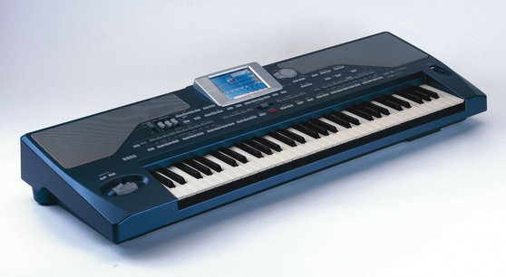

Korg KRONOS 2 Synthesizer - 61 Key
The Kronos is back and better than ever. For starters, its got a beautiful sleek new look with wood side panels that give it class and sophistication. And with an Enhanced SGX-2 Grand piano engine, a massive library of top quality sounds, a Natural Touch semi-weighted action keyboard and a complete suite of performance and production tools, the Kronos is one for the professional and the keen amateur alike.
Korg KRONOS 2 Specifications:
o Enhanced SGX-2 Grand Piano Engine featuring the new Berlin Grand
o Massive sound selection
o Master sound design team
o KRONOS Expansion Sound Libraries
o Artist Sound Libraries
o Famous Song Sounds
o Nine distinct sound engines
o Innovative Set List mode with many new updates
o Color TouchView display—now with TouchDrag capability
o Sequencer Compositional Tools
o KARMA
o Drum Track
o Open Sampling System
o 16-track audio recording / 16-track MIDI sequencing
o 16 onboard effects processors
o USB/MIDI host ports accommodate MIDI control surfaces (KORG microKEY; KORG NanoPAD2; etc.)
o Natural Touch semi-weighted action (61 key models)
o Smooth Sound Transitions
o Advanced Control Surface
o Dual Joysticks (X-Y; Vector)
o Ribbon Controller
o 8 rotary knobs
o 9 sliders
o 16 illuminated buttons